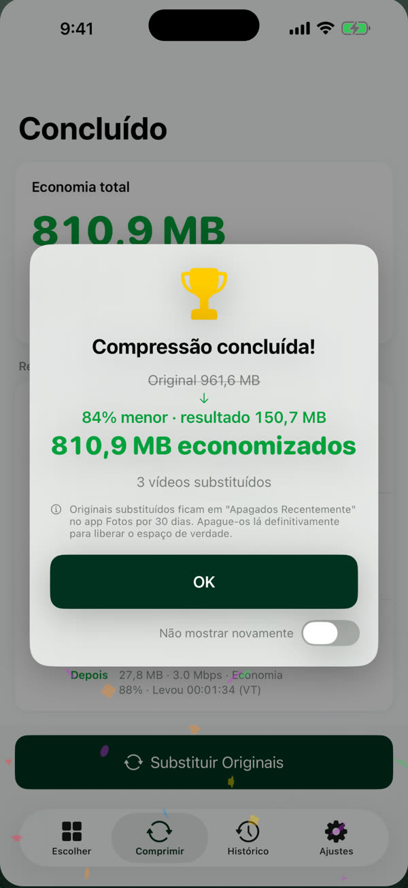
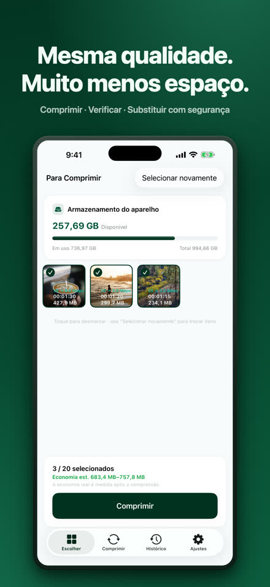
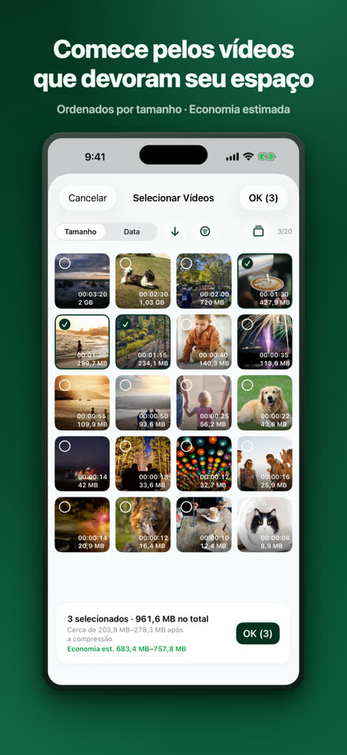
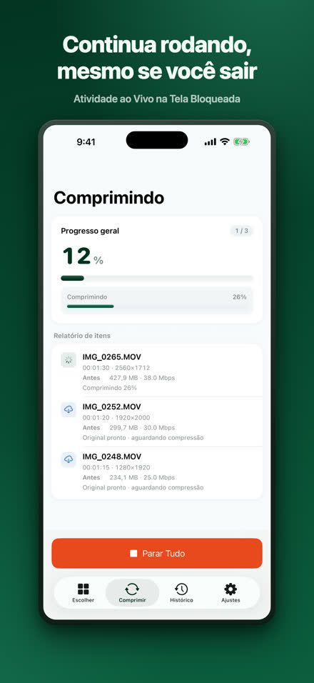
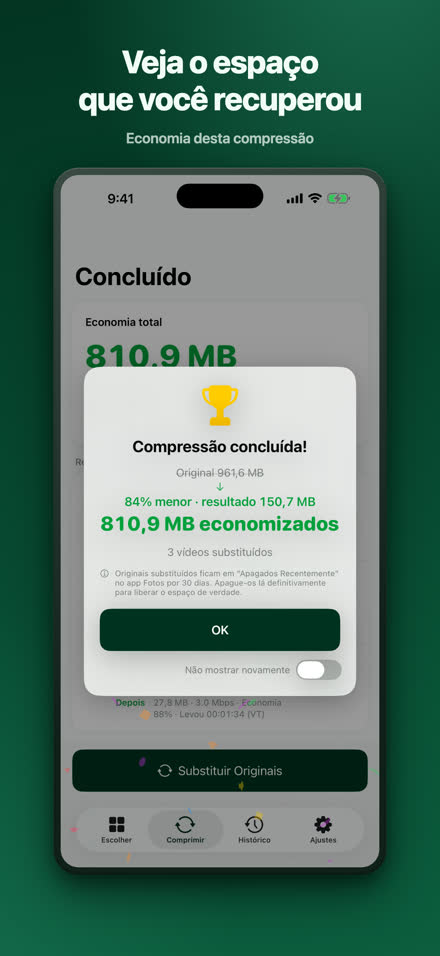
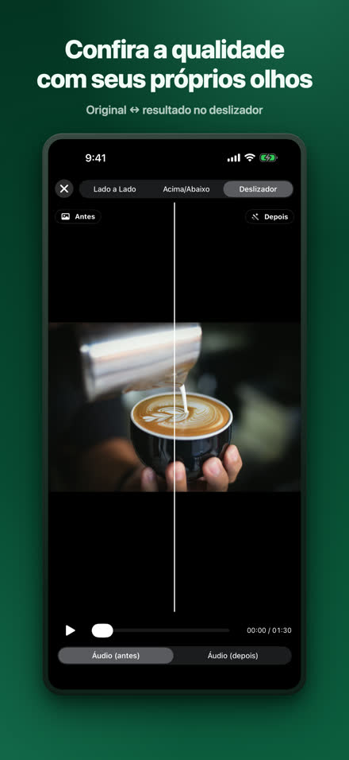
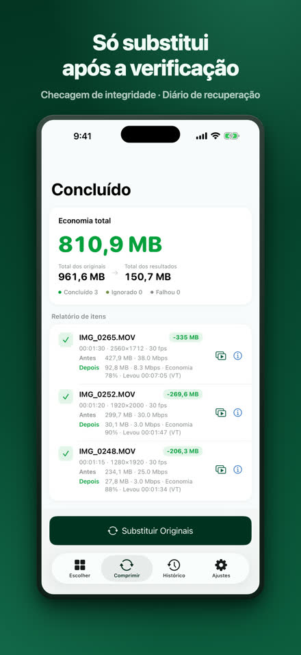
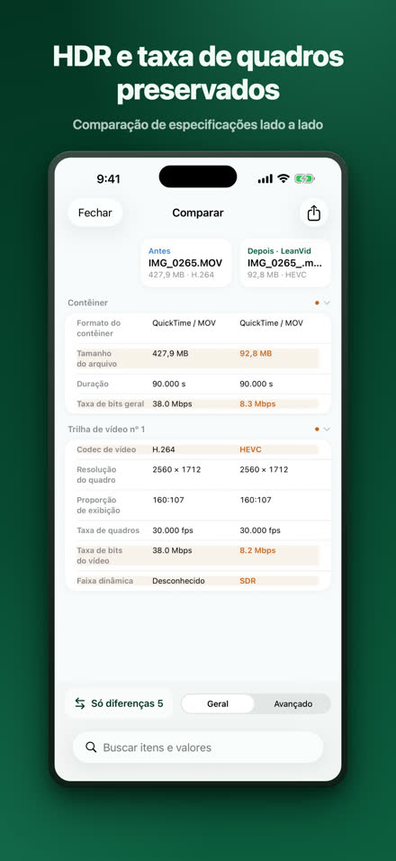
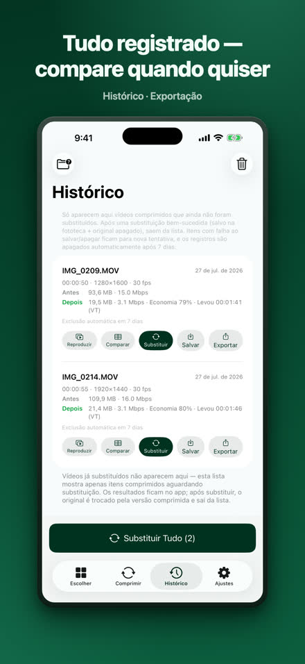

Reduza seus vídeos, mantenha a qualidade.
O LeanVid comprime os vídeos da sua fototeca e do app Arquivos reduzindo apenas a taxa de bits — resolução, taxa de quadros, cor e HDR permanecem intactos. Cada resultado é verificado antes de substituir o original, e os originais da fototeca podem ser recuperados por 30 dias.
Baixar na App StoreiOS 18 ou posterior · iPhone e iPad (também funciona em Macs com Apple silicon como um app de iPad)

O mesmo vídeo, em uma fração do espaço.
Nosso teste: uma gravação de tela de 3 min 34 s. O resultado varia de vídeo para vídeo.
Escolha, comprima, confira, substitua.








Tudo de que você precisa, incluído.
apenas o bitrate, com HDR e todas as faixas preservados
verificações de integridade, registro de recuperação, confirmação do sistema
comparação lado a lado e com controle deslizante, tabela completa de especificações
escolha vídeos de No Meu iPhone ou do iCloud Drive; arquivos MKV, WebM, AVI, WMV, FLV, TS, MPG e VOB são convertidos para HEVC/MP4 no seu dispositivo
compressão em segundo plano com progresso na Live Activity (iOS 26 ou posterior); em versões anteriores, ela continua automaticamente quando você volta ao app
seus vídeos são comprimidos no seu iPhone e nunca saem dele; sem necessidade de conta — Privacidade